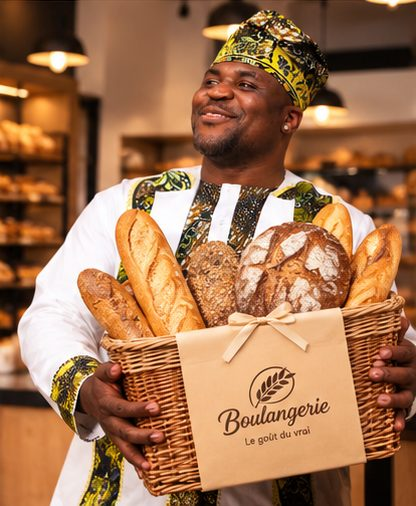

Notre histoire
Le goût du vrai
Du vrai, rien que du vrai : un pain qui prend le temps de lever, un sourire qui accueille.

Nos promesses
Trois choses qu’on ne négocie pas
Frais chaque jour
Fournées du matin, vitrine renouvelée : ce que vous goûtez a été fait aujourd’hui.
Fait avec soin
Des gestes simples, de bons ingrédients, et tout le temps qu’il faut.
Servi avec le sourire
On vous accueille, on vous conseille et on emballe chaque sac avec soin.
Une journée type
Du premier pétrissage à la dernière miette
On prépare
Farines pesées, levain nourri, plans de travail prêts : la boulangerie s’éveille avant tout le monde.
On enfourne
Baguettes, pains de campagne, croissants : les premières fournées sortent dorées.
On sert
La vitrine se remplit, les premiers clients arrivent, les sacs en papier passent de main en main.
On sucre
Gâteaux, cookies, macarons : place aux douceurs pour le goûter.
Côté douceurs
Des gâteaux qui donnent le sourire

Gâteaux
Chocolat, crème, décors : pour les anniversaires et les petits bonheurs.

Biscuits & cookies
Pépites, sablés au beurre : croquants à souhait.

Macarons
Pistache, framboise, vanille : coques lisses, cœur fondant.
.jpg)
Tartes
Pâte sablée dorée et fruits de saison.

Cupcakes
Un glaçage onctueux, un décor différent chaque jour.

Beignets glacés
Moelleux et sucrés, parfaits avec un café.
Peu d’ingrédients
Du simple, bien choisi
La farine
Le cœur du pain : on la choisit pour sa tenue et son goût.
Le beurre
Pour des croissants feuilletés et des sablés qui fondent.
Le temps
L’ingrédient que l’on ne remplace pas : pousse lente, cuisson juste.
Localisation
Batié, dans l’Ouest du Cameroun
Batié est une commune du département des Hauts-Plateaux, dans la région de l’Ouest, sur la route nationale N5 qui relie Bafoussam à Douala.
Où nous trouver
Venez nous voir à Batié
Passez en boutique choisir à la vitrine, ou commandez à l’avance et récupérez votre sac sur place. Ouvert tous les jours.
